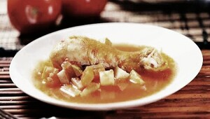

Pollo entomatado

Descripción:
Uno de mis platillos favoritos. Es fácil de preparar y sabe muy delicioso.
Más rico si se acompaña con arroz, totopos y una limonada bien fría.
Ingredientes (para 5 personas):
- 4 tomates
- 2 chiles
- 1/2 cebolla
- Aceite
- 2 papas
- 1 cucharada de Knorr suiza
- 1 taza de agua
Procedimiento:
- Calentar un poco de aceite en un sartén.
- Quemar los tomates, chiles y cebolla. Voltearlos regularmente para que se quemen uniformemente.
- Sacar los chiles, partirlos a la mitad y quitarles las semillas y palito.
- Licuar los tomates, chiles, cebollas, agua y cucharada de Knorr suiza.
- Pelar las papas y partirlas en cuadros.
- En otra olla, dorar el pollo por los dos lados.
- Echar las papas y la salsa en la olla con el pollo.
- Hervir a fuego lento hasta que el pollo este cocido y las papas suaves.
- Agregar sal al gusto.
- Disfrutar!